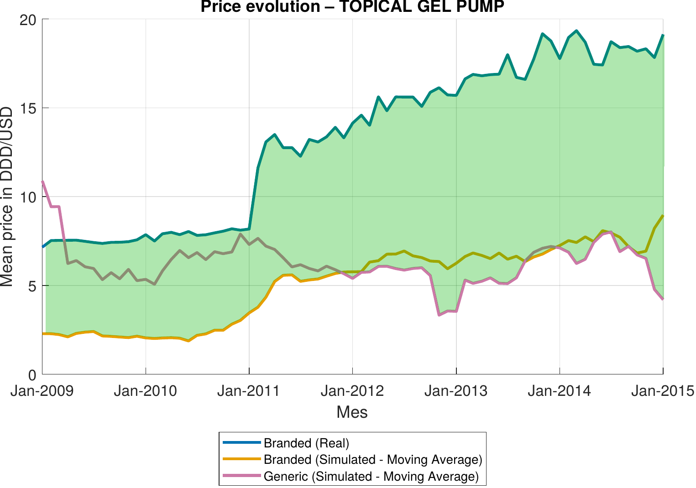
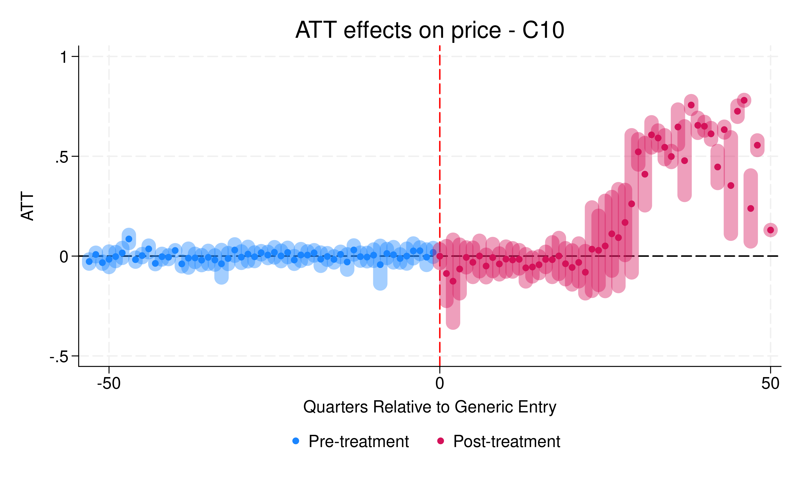
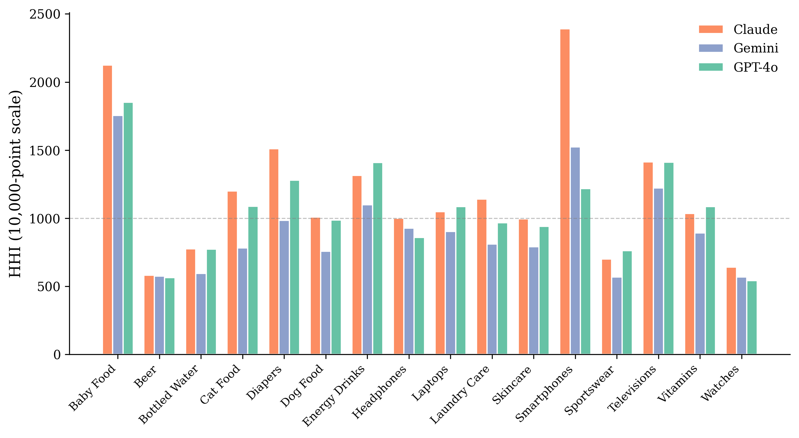
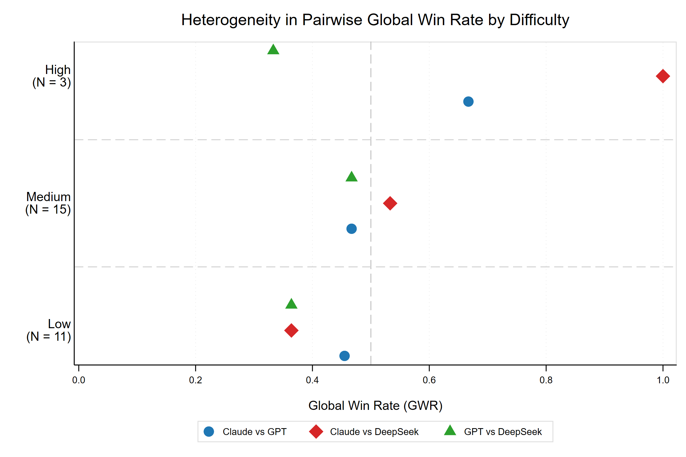

Research
My research focuses on antitrust and empirical industrial organization. I am particularly interested in competition policy questions such as cartel detection, the prevention of anticompetitive conduct, and the welfare consequences of firm behavior in markets. In parallel, I have developed a line of work at the intersection of artificial intelligence and economics, examining how large language models relate to market structure and how they perform as tools for economic reasoning and teaching.
-
01
Pay for Delay: Preventing Competition in Pharmaceutical Markets

Abstract
Pay-for-Delay agreements occur when a branded pharmaceutical firm compensates a generic competitor to delay market entry, raising concerns about competition and consumer welfare. This paper quantifies the consumer harm from the agreement that delayed generic entry into the U.S. Testosterone Replacement Therapy market from 2006 until 2015, focusing on the AndroGel® settlement.
Read moreRead less
I estimate a two-level nested logit demand model on monthly product-level data, recover marginal costs from Bertrand-Nash first-order conditions, and simulate a counterfactual scenario in which generic products enter the market prior to 2015. The counterfactual is constructed by augmenting the choice set with fictitious generics and solving for new equilibrium prices, accounting for the endogenous price responses of all incumbent firms. The results indicate that earlier generic entry would have made alternatives available at prices 5–11% below branded levels in the affected forms. Total consumer damages from the agreement amount to $326 million over the observed delay period, an 18% increase in consumer surplus that would have been realized under earlier entry. The supply-side analysis confirms that the agreement was individually rational for all parties, sustained by the direct transfer of monopoly rents rather than by strategic advantages from delayed entry.
Job Market Paper Revise & Resubmit · Journal of Industrial Economics -
02
Working paper
When Does the "Generic Paradox" Occur? Evidence from Therapeutic Class Heterogeneity

Abstract
Standard economic theory predicts that prices should decline as the number of competitors increases. However, in pharmaceutical markets, empirical evidence on the effect of generic entry on branded drug prices remains unclear. While some studies find that branded prices increase after generic entry (the so-called "Generic Paradox"), others document price declines.
Read moreRead less
This paper investigates whether different markets defined by therapeutic class can explain these divergent findings, and offers the broadest empirical test of the Generic Paradox to date. Using a comprehensive dataset of over 475 branded products across two major therapeutic classes (C10 and C09), I apply the Callaway and Sant'Anna (2021) difference-in-differences estimator to evaluate the effect of generic entry on branded drug prices and market shares. The results reveal a clear divergence: in class C10 branded prices increase by approximately 50% after 30 quarters, while in C09 they decline by 20–40% after 20 quarters. Both classes experience branded market share erosion, measured as the market share of all branded products within a particular molecule, but at different speeds: C09 within 10 quarters versus approximately 20 quarters in C10. This contributes to the literature by showing that the Generic Paradox is therapeutic-class specific, indicating that prior mixed evidence may reflect genuine heterogeneity across markets, and highlighting the need for future research to identify the underlying market characteristics that drive this paradox.
-
03
Working paper
AI Meets Antitrust: How Large Language Models Reshape Market Concentration

Abstract
Large language models are rapidly becoming a primary interface for consumer product discovery, yet little is known about how their recommendations relate to real-world market structure. This paper provides the first empirical benchmark of LLM brand recommendations against actual market shares.
Read moreRead less
Using 1,429 responses from three frontier models (GPT-4o, Claude Sonnet 4, Gemini 2.5 Flash Lite) across sixteen U.S. consumer categories, I compare the implied concentration of LLM recommendations to retail-value shares from Euromonitor Passport 2024. In fragmented markets such as skincare, LLMs concentrate their recommendations on fewer brands than the market share distribution would suggest; in highly concentrated markets such as headphones, they distribute recommendations across more brands than the market share distribution reflects. Both patterns reflect a single phenomenon: LLM recommendations live in a narrow concentration band roughly one third the width of the real market's, regardless of where the real market sits. A second pattern tilts top recommendations toward specialist and premium brands that hold only two-thirds of the market share of actual category leaders. Findings are stable across the three models studied.
-
04
AI Meets Econometrics: A Multi-Model Evaluation of LLM Pedagogical Quality in Economics

Abstract
This paper evaluates the pedagogical quality of three frontier large language models — Claude Sonnet 4.5, GPT-5, and DeepSeek-V3 — as study aids for undergraduate econometrics.
Read moreRead less
A sample of 29 questions-subquestions drawn from a typical undergraduate econometrics book, covering OLS, panel data, instrumental variables, and time series, is submitted to each model via API under identical prompts. Responses are scored using a seven-dimension rubric that separates technical correctness from pedagogical quality, and models are compared using three pairwise metrics adapted from an existing framework. All three models achieve very good scores on accuracy, completeness, and terminology, indicating that factual reliability no longer discriminates between frontier systems. The meaningful differences emerge in pedagogical dimensions: technical clarity, explanatory clarity, and pedagogical usefulness. Claude leads overall, particularly on computational questions, while GPT produces superior responses to conceptual questions. DeepSeek consistently underperforms on pedagogical quality despite comparable factual accuracy. These findings imply that the pedagogical risk of AI-assisted econometrics learning lies not in incorrect content but in the quality of explanation that accompanies correct answers, and that the optimal model choice depends on the type of task.
Working paper Revise & Resubmit · International Review of Economics Education
-
01
Work in progress
Can Divestitures Undo Cartel Damage? Evidence from the Teva-Allergan Merger
Abstract
This paper examines whether structural remedies can reverse the price effects of collusion. It exploits a unique overlap in the U.S. generic pharmaceutical industry, where a subset of molecules were simultaneously affected by the 2013–2015 generic price-fixing cartel and subject to the mandatory divestitures imposed by the Federal Trade Commission in the 2016 Teva-Allergan merger.
Read moreRead less
By comparing the price evolution of molecules that were cartelized only, divested only, or both, the paper evaluates whether the divestitures restored competitive pricing precisely in the markets where prior collusion had elevated prices above competitive levels.
- Innova Award to the Young Researcher with the Best R&D&i Project (PhD) Universitat Rovira i Virgili (2026)
- Young Talent Competition Award Lear Competition Festival (2025)
- XL Jornadas de Economía Industrial Málaga, September 2026
- EARIE — Annual Conference of the European Association for Research in Industrial Economics Mannheim, August 2026
- BSE PhD Jamboree, Barcelona School of Economics Barcelona, May 2026
- EuHEA Seminar Series Online, April 2026
- CRES Seminar, Universitat Pompeu Fabra Barcelona, February 2026
- WIPE — Workshop on Industrial and Public Economics Reus, February 2026
- XXXIX Jornadas de Economía Industrial Santander, September 2025
- Lear Competition Festival Rome, September 2025
- EARIE — Annual Conference of the European Association for Research in Industrial Economics Valencia, August 2025
- Centre for Competition Policy (CCP) Seminar London, June 2025
- CCP Conference on Frontiers of Competition and Regulation London, June 2025